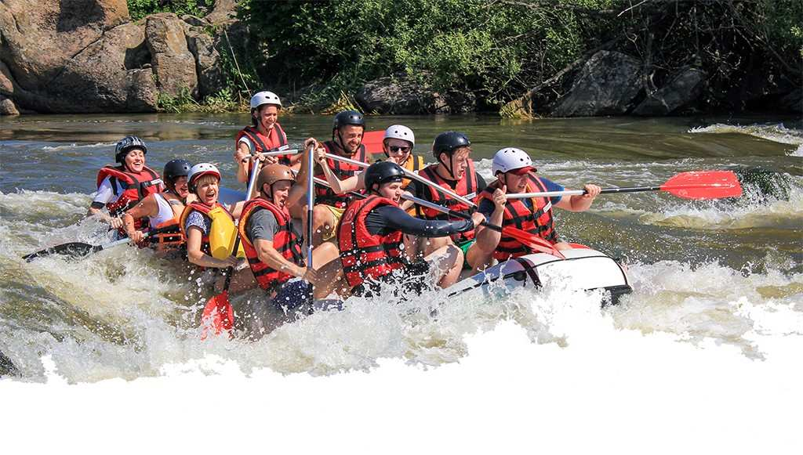
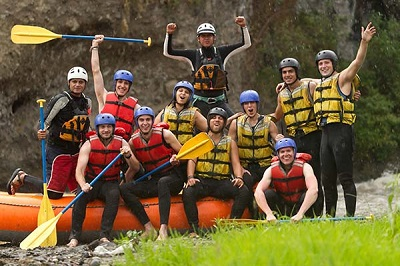
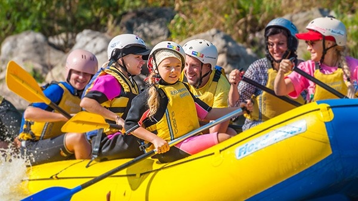

Whitewater Rafting
History

Founded years ago, and become a renowned adventure company, guiding countless thrill-seekers through challenging rapids and wild rivers, building a legacy of excitement and unforgettable experiences.
Founded with a passion for adventure, "Answer the Call of the WhiteWaters" has transformed from a small group of enthusiasts into a premier rafting company. With a commitment to safety and excellence, it guides thrill-seekers through some of the most challenging rapids and scenic rivers. Over the years, the company has expanded its offerings, introducing eco-friendly practices and advanced rafting routes. Its experienced guides, dedication to customer satisfaction, and numerous accolades have solidified its reputation as a leader in adventure tourism, creating unforgettable experiences for adventurers.
Adventure Awaits You